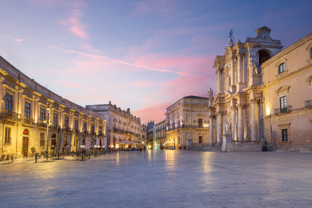

Piazza del Duomo, Siracusa

Un salotto di luce e millenni: Piazza del Duomo a Siracusa
Arrivare in Piazza del Duomo, nel cuore dell'isola di Ortigia, è come varcare la soglia del tempo. Questo spazio semi-ellittico, inondato dalla luce abbagliante del sole che riflette sulla candida pietra calcarea, racconta gli orgogli passati e l'anima stessa della Sicilia. È un vero e proprio salotto a cielo aperto dove la storia millenaria si offre allo sguardo in un colpo solo, lasciando il visitatore letteralmente senza fiato.
Il tempio greco nascosto nel Barocco
Il capolavoro assoluto e indiscusso della piazza è la Cattedrale della Natività di Maria Santissima. La sua maestosa e teatrale facciata barocca, capolavoro del Settecento siciliano post-terremoto del 1693, nasconde un segreto straordinario: la chiesa è nata costruita inglobando l'antico Tempio greco dedicato ad Atena nel V secolo a.C. Camminando lungo il fianco del Duomo o all'interno, infatti, è possibile toccare con mano le possenti colonne doriche originali, un unicum mondiale di incredibile fascino architettonico.